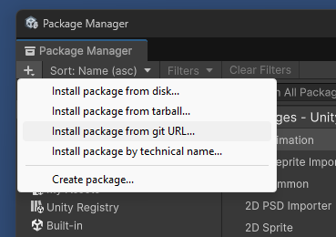

UserGuidePart01GetAlterunaMultiplayer
How to install Alteruna v2 and register a license.
Download the Alteruna Unity Package
You can download Alteruna Multiplayer SDK v2 from
github.com/Alteruna/multiplayer-sdk-unity-package.
Add the link to Unity Package Manager from the Unity Editor through
Window → Package Manager → + → Add package from git URL.

Create Alteruna project
To create or managed your Alteruna Multiplayer v2 projects, visit
portal.mp2.alteruna.comThe website will offer you some pointers of how to get started.
Register license
You can register the license using the Unity Editor through
Window → Alteruna → Register license.
Ensure that you use your v2 project id or key and
not a v1 license key.
note. v2 project id will follow the GUID format (XXXXXXXX-XXXX-XXXX-XXXX-XXXXXXXXXXXX)Alteruna Multiplayer compability
Alteruna Multiplayer v2 supports Unity Editor versions 2021.3 or later.
If you experience any issues using a newer version, please contact us or submit a bug report.
← Back |
Next →